p2pFX nedir?
p2pFX, bankanın mobil uygulamasına gömülen white-label bir döviz pazarıdır. Müşteri, vadesiz döviz hesabındaki parayı kendi belirlediği fiyattan satışa çıkarır; aynı bankanın başka bir müşterisi alış emri verir. Emirler eşleştiğinde banka satıcıdan dövizi alır, alıcıya satar ve her iki taraftan komisyon kazanır.
Her eşleşmede alış ve satış tarafından ayrı komisyon. Banka iki işlemi aynı anda, aynı miktarla yaptığı için kur pozisyonu oluşmaz.
Müşteriler birbirleriyle işlem yapmaz; karşı taraf her zaman bankadır. Her eşleşme bankanın mevcut döviz alım-satım kayıtları ve dekontlarıyla işlenir.
Ayrı giriş, ayrı cüzdan yok. Bankanın uygulamasında, bankanın renkleriyle açılır; müşterinin kendi vadesiz hesaplarını kullanır.
Bir bakışta
- İki likidite kaynağı tek ekranda: müşteriler arası emir defteri (P2P) ve bankanın segment bazlı kendi kuru. Müşteri hangisi iyiyse onu seçer; emir bileti daha iyi fiyatı kendisi gösterir.
- Tüm iş kuralları bankanın elinde: komisyon, kambiyo vergisi, bloke politikası, emir geçerliliği, işlem saatleri, segment limitleri ve marjlar backoffice'ten, yeniden başlatma olmadan, gerekçeli ve versiyonlu olarak değiştirilir.
- FX masası: likidite sağlayıcı (LP) fiyatlarının birleştirilmesi, segment kurları, pozisyon, kâr/zarar ve otomatik hedge.
- Banka başına ayrı kurulum: her banka kendi sunucusunda veya özel bulutunda, kendi veritabanıyla çalışan izole bir kopya alır.
- Çalışan prototip: bu dokümandaki tüm ekranlar, tek komutla ayağa kalkan demo ortamından alınmıştır.
İçindekiler
- 1Sorun ve fırsat
- 2Nasıl çalışır
- 3Müşteri deneyimi
- 4Bankanın kendi kuru
- 5FX masası ve hedge
- 6Backoffice ve yönetişim
- 7White-label ve uygulama içinde uygulama
- 8Güvenlik, uyum ve entegrasyon
- 9Pilot yol haritası
- 10Netleştirilecek konular
1Sorun ve fırsat
Bireysel müşteri döviz alırken ya da satarken bankanın alış-satış makasını öder ve fiyatı kendisi belirleyemez. Daha iyi fiyat arayan müşteri bankanın dışına, döviz bürolarına ve kayıt dışı kanallara yönelir.
Müşterinin bugünkü durumu
- Banka kurundan işlem yapar ya da hiç yapmaz; "şu fiyattan satarım" diyemez.
- Fiyat bekleyen müşteri sürekli uygulamayı kontrol etmek zorundadır.
- Daha iyi fiyat için şubeye, döviz bürosuna veya tanıdığa gider.
Bankanın bugünkü durumu
- Müşteri akışının bir kısmı banka dışına kayar; mevduat ve ilişki zayıflar.
- Banka kurundan yapılan her işlem bankaya pozisyon ve hedge maliyeti getirir.
- Bankaların döviz ekranları birbirine benzer; farklılaşma alanı dardır.
p2pFX ile
| Paydaş | Kazanım |
|---|---|
| Müşteri | Kendi fiyatını yazar, emri gün sonuna, belirli bir tarihe veya iptal edene kadar bekletir. Tahtada anlık derinliği, son işlemleri ve bankanın kendi kurunu yan yana görür. Para kendi vadesiz hesabında kalır. |
| Gelir | Her eşleşmede iki taraftan komisyon; banka kurundan işlemde segment marjı. P2P eşleşmede kur riski yoktur. |
| Hazine / FX masası | Müşteriler arası akış kendi içinde karşılanır; banka sadece kendi kurundan yaptığı işlemlerin pozisyonunu yönetir. Pozisyon limitleri ve otomatik hedge kuralları ürünle birlikte gelir. |
| Dijital kanal | Müşteriyi uygulamaya tekrar tekrar getiren canlı bir ekran: tahta, emir defteri, bildirimler. Bankanın markasıyla, uygulamanın içinde. |
| Uyum ve operasyon | Karşı taraf her zaman banka; her işlem temel bankacılıkta bankanın döviz alım/satım kaydı ve dekontuyla oluşur. Tüm parametre değişiklikleri ve operasyon işlemleri silinemez denetim izinde. |
2Nasıl çalışır
Türk mevzuatında döviz alım-satımını yalnızca yetkili kuruluşlar yapabilir. Bu nedenle müşteriler birbirine döviz satmaz: emirler eşleştiğinde banka her eşleşme için iki ayrı işlem yapar.
satıcıdan alır
alıcıya satar
İki işlem aynı miktar ve aynı eşleşme fiyatı üzerinden yapıldığı için bankanın döviz pozisyonu sıfır kalır. Banka eşleşme fiyatına alıcı tarafında komisyon ekler, satıcı tarafında komisyon düşer. Kambiyo vergisi bankanın döviz satışında, yani alıcıdan tahsil edilip vergi hesabına aktarılır; satıcıdan vergi alınmaz.
Fiyat, komisyon ve kambiyo vergisi
- Kitap fiyatı: müşterinin yazdığı, emir defterinde görünen ve eşleşmede kullanılan fiyat (komisyonsuz).
- Banka komisyonu: parite ve taraf bazında "pip" cinsinden tanımlanır (istenirse fiyatın oranı olarak baz puan). USD/TRY için 1 pip = 0,0001 TL (ayarlanabilir); varsayılan 500 pip, yani döviz başına 0,05 TL.
- Kambiyo vergisi: taraf bazında oran olarak tanımlanır; matrah komisyon dahil tutar ya da kitap fiyatı olabilir. Kıymetli madenler için ayrı oran tutulur. Prototipte alıcıdan binde 2, satıcıdan 0 kullanılmıştır.
Demo ortamında yapılan gerçek bir işlem: Ayşe 1.000 USD'yi 49,15'ten satışa çıkarıyor, Mehmet aynı fiyattan alıyor.
| Alıcı (Mehmet) | Satıcı (Ayşe) | |
|---|---|---|
| Kitap fiyatı | 49,1500 | 49,1500 |
| Banka komisyonu (500 pip) | + 0,0500 | − 0,0500 |
| Uygulanan kur | 49,2000 | 49,1000 |
| Komisyon dahil tutar | 49.200,00 TL | 49.100,00 TL |
| Kambiyo vergisi (binde 2, alıcıdan) | + 98,40 TL | yok |
| Hesaptan çekilen / hesaba geçen | 49.298,40 TL çekilir | 49.100,00 TL geçer |
| Döviz | + 1.000 USD | − 1.000 USD |
Bankanın bu eşleşmeden geliri: 1.000 × (0,05 + 0,05) = 100,00 TL komisyon. Kambiyo vergisi yalnızca alıcıdan tahsil edilir (98,40 TL). Bankanın USD pozisyonu: +1.000 alış, −1.000 satış, net sıfır.
Emir kuralları
| Kural | Açıklama |
|---|---|
| Emir tipi | Limit emir: belirli miktarı belirli fiyattan al veya sat. Parçalı gerçekleşme desteklenir. |
| Eşleştirme | Fiyat-zaman önceliği. İşlem, bekleyen emrin fiyatından gerçekleşir; daha yüksek fiyat yazan alıcı daha iyi fiyattan alabilir. Komisyon ve vergi gerçekleşen fiyat üzerinden yeniden hesaplanır. |
| Geçerlilik | Gün sonu, tarihe kadar veya iptal edilene kadar. Banka hangilerinin açık olacağını ve azami süreyi (varsayılan 30 gün) belirler. Süresi dolan emir otomatik iptal edilir, blokesi kalkar. |
| Fiyat bandı | Referans kurdan ±%N uzaktaki emirler reddedilir (parite bazında, varsayılan %3). |
| Limitler | Segment bazında tek emir ve günlük toplam tutar; müşteri başına emir hızı sınırı. |
| İşlem saatleri | Günler, açılış/kapanış ve tatiller banka ayarıdır. Kapalıyken gelen emir reddedilir ya da açılışa kadar sıraya alınır. |
| Kendisiyle eşleşme | Bir müşterinin alış emri kendi satış emriyle eşleşmez. |
Bakiye blokesi: bankanın tercihi
Bloke (block)
Emir girildiği anda temel bankacılıkta bloke konur: satışta döviz miktarı, alışta en kötü durumdaki toplam TL (komisyon ve vergi dahil). Her gerçekleşmede bloke küçülür, iptal veya süre dolumunda kalkar. Eşleşen her emrin parası garantidir.
Bloke yok (no_block)
Emir girişinde yalnızca bakiye kontrol edilir. Eşleşme anında iki tarafa bloke konmaya çalışılır; bakiyesi yetmeyen emir "yetersiz bakiye" ile iptal edilir, müşteriye bildirim gider, karşı emir defterdeki bir sonraki emirle eşleşmeye devam eder.
Her iki modda da emir, giriş kontrolünden geçmeden emir defterinde görünmez.
Bir eşleşmenin hesaplara işlenmesi
Her eşleşme, müşterilerin kendi vadesiz hesaplarında iki banka döviz işlemi olarak kaydedilir: önce banka satıcıdan dövizi alır, sonra alıcıya satar. Komisyon bankanın komisyon gelir hesabına, vergi vergi hesabına gider. Her adım tekrarlanabilirlik anahtarıyla (idempotency) yürür. Temel bankacılık geç cevap verirse işlem "başarısız" sayılmaz, önce sorgulanır; aynı kayıt iki kez atılmaz. Tamamlanamayan eşleşme hiçbir hesaba yarım kayıt bırakmadan operasyon kuyruğuna düşer ve backoffice'ten tekrar denenir.
3Müşteri deneyimi
Müşteri bankasının uygulamasında "Döviz Pazarı"na dokunur; ayrı giriş yapmaz. Beş sekme vardır: Al-Sat, Tahta, Emirlerim, İşlemlerim, Hesaplarım. Açık her parite (döviz ile gram altın, gümüş ve platin) üstte sekme olarak görünür.

Tahta: piyasayı görmek


Emir vermek: şeffaf onay ekranı
Müşteri miktar, fiyat ve geçerlilik seçer. Emir bileti, onaydan önce komisyonu, uygulanacak kuru, kambiyo vergisini ve hesaba geçecek ya da hesaptan çekilecek net tutarı açıkça gösterir. Onay ekranı bankanın karşı taraf olduğunu, bloke kuralını ve parçalı gerçekleşmeyi müşteriye tek tek söyler.
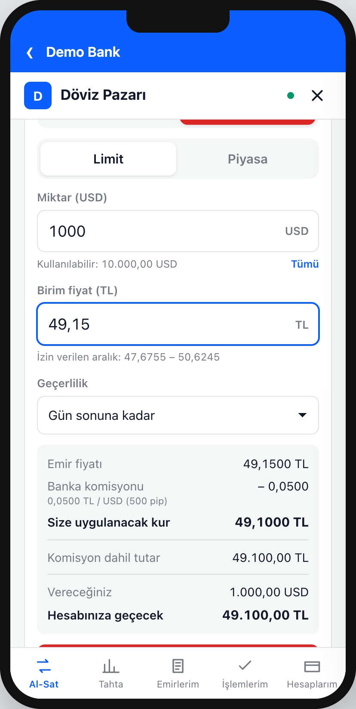
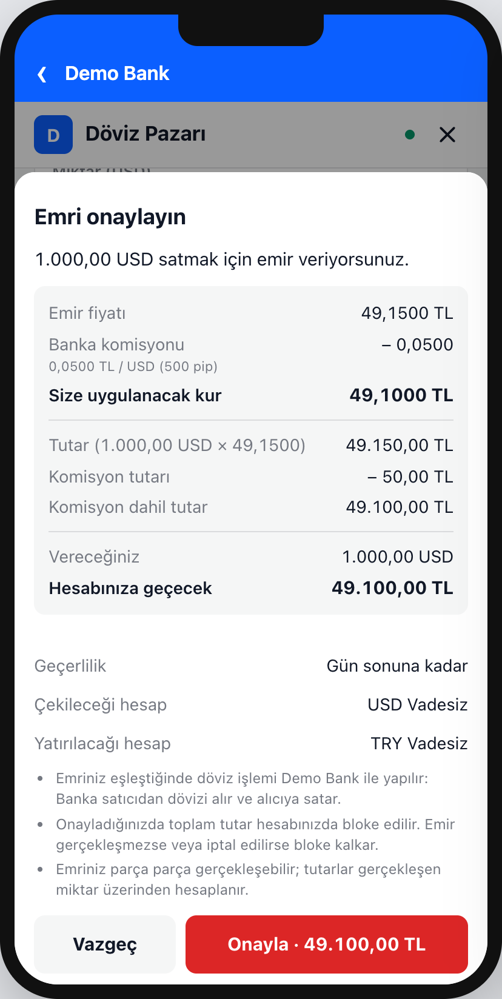

İşlem sonrası: dekont ve hesaplar
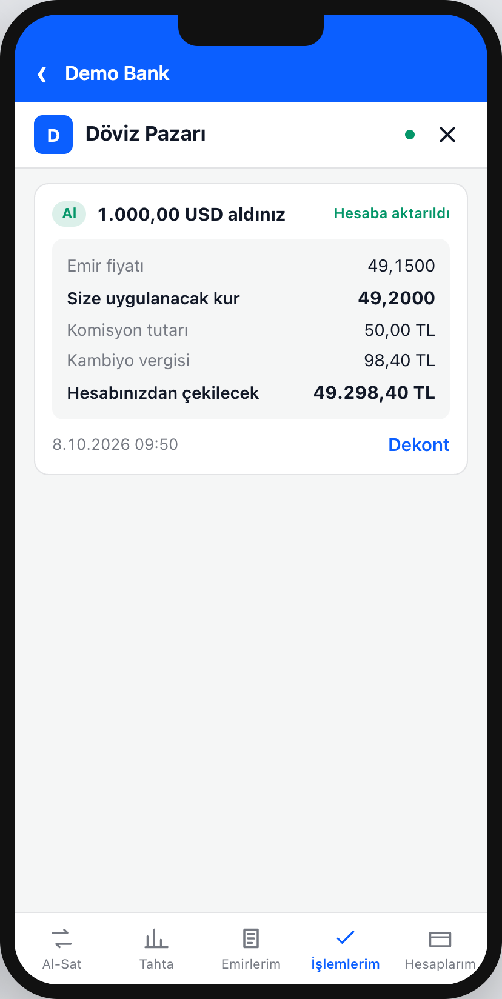
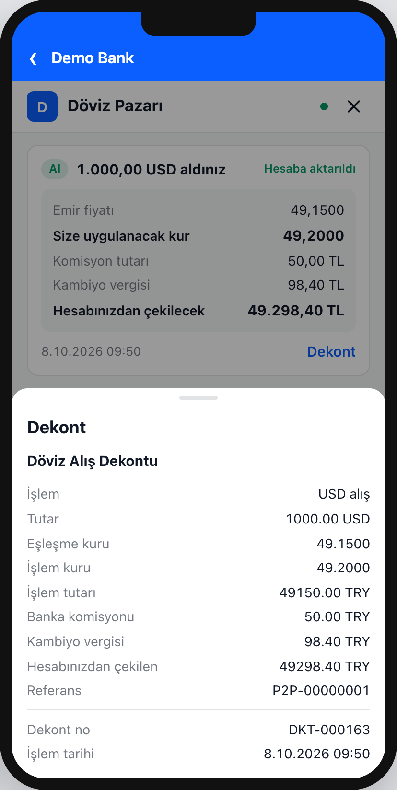
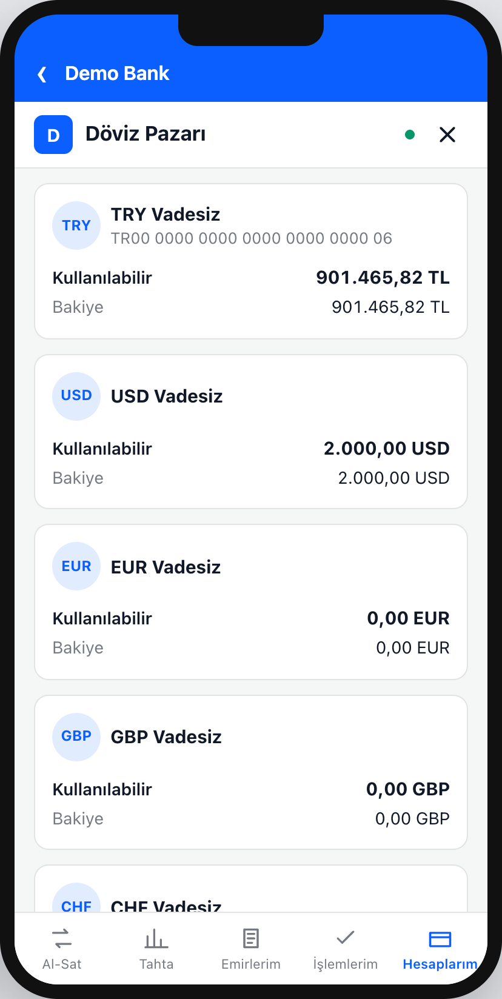
Eşleşme gerçekleştiğinde iki müşterinin ekranı da anında güncellenir ve bildirim gösterilir; banka isterse aynı bildirimi kendi push kanalından da gönderir. Bekleyen emirler Emirlerim sekmesinden izlenir, güncellenir ve iptal edilir.
Emri güncellemek
Müşteri bekleyen emrini iptal edip yeniden girmeden, fiyatını ve miktarını Emirlerim'deki Güncelle ile değiştirir. Panel güncellemeyi piyasayla birlikte gösterir: referans kur, tahtadaki en iyi alış ve satış, bankanın kuru ve emrin kendi kademesi işaretli emir defteri. Bir kademeye dokunmak fiyatı doldurur.
- Sıra: yalnızca miktar düşürülürse emir sıradaki yerini korur; fiyat değişirse ya da miktar artarsa o fiyattaki sıranın sonuna geçer ve karşı emirlerle hemen eşleşebilir.
- Fiyatlama: güncellenen emir bankanın o anki komisyon ve vergi oranlarıyla fiyatlanır; panel kalan miktar için yeni dökümü gösterir. Fiyat bandı, emir ve günlük limitler yeniden kontrol edilir.
- Bloke: alış fiyatı yükselirse bloke önce artırılır; bakiye yetmezse güncelleme reddedilir ve emir olduğu gibi kalır. Küçülen emirde fazla bloke iade edilir.
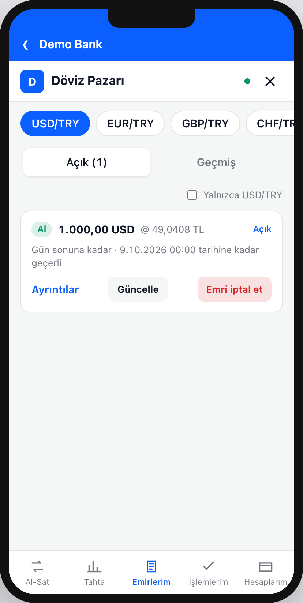

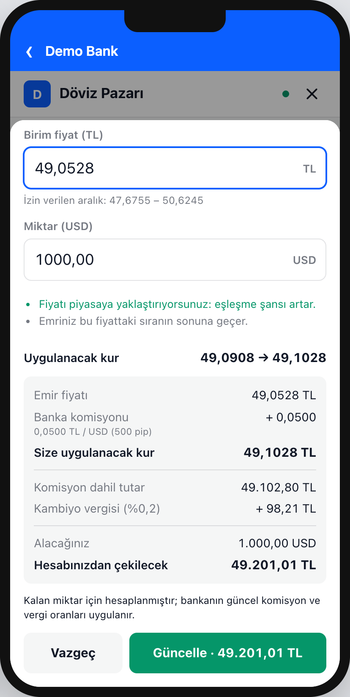
4Bankanın kendi kuru
Emir defterinin üstünde bankanın kendi kuru durur: likidite sağlayıcılarından gelen en iyi fiyat ve müşterinin segmentine özel marj. Karşı emir beklemek istemeyen müşteri bankayla anında işlem yapar.
- Segment bazlı fiyat: aynı anda bireysel müşteri (örnekte 1000 pip marj) ile premium müşteri (400 pip) farklı kur görür; LP fiyatı oynadıkça kur canlı değişir.
- Kesin fiyat: müşteri miktar girip "Fiyat al" der; vergi ve toplamla birlikte 10 saniye geçerli kesin fiyat alır. Geri sayım biterse yeniden fiyat ister.
- Anında işlem: onaylanınca tek bir döviz işlemi yapılır, dekont anında oluşur; işlem İşlemlerim'de "Banka" etiketiyle görünür.
- Daha iyi fiyat uyarısı: müşteri emir girerken bankanın kuru P2P fiyatından iyiyse bilet bunu söyler.
- Komisyon yok, marj var: bankayla işlemde ayrıca P2P komisyonu alınmaz; kazanç segment marjıdır. Kambiyo vergisi normal uygulanır.
Tahtada banka emirleri: banka isterse emir defterine kendi hesabından kademeli emirler de koyar (örneğin banka kurunun %0,02 uzağından başlayan 5.000, 10.000 ve 20.000 USD). Kademe fiyatları komisyon düşülerek girilir; böylece müşteri komisyonla birlikte banka kurundan daha iyi bir fiyat bulamaz. Alınan kademe yeniden dolar ve işlem bankanın pozisyonuna yazılır.

5FX masası ve hedge
Bankanın kendi kurundan yaptığı işlemler pozisyon yaratır; P2P eşleşmeler yaratmaz. FX masası ekranı bu pozisyonu, fiyat kaynaklarını ve hedge işlemlerini tek yerde gösterir ve saniyede bir yenilenir.

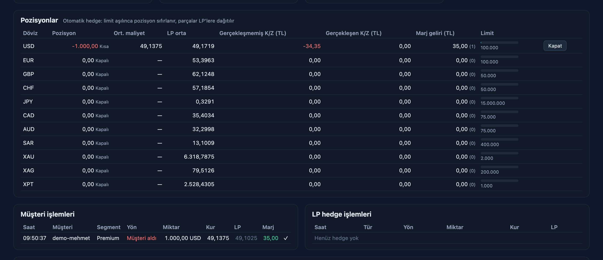
Otomatik hedge kuralı
- Pozisyon limiti: döviz bazında tanımlanır. Bir işlem pozisyonu limitin ötesine taşırsa otomatik hedge devreye girer.
- Hedef seviye: hedge pozisyonu limitin belirli bir yüzdesine indirir (0 = sıfırla). Örnek: limit 100.000, hedef %50 ise 130.000 kısa pozisyon 80.000'lik alışla 50.000'e iner.
- Parça büyüklüğü ve dağıtım: büyük hedge, en büyük LP bileti boyutunda parçalara bölünür. Parçalar LP'lere en iyi fiyattan başlayarak sırayla ya da hepsi en iyi LP'ye gönderilir. Reddeden LP'nin parçası bir sonrakine gider; hiçbir LP'nin almadığı tutar açık pozisyon olarak görünür.
- Belirsiz sonuç: zaman aşımına uğrayan LP işlemi başarısız sayılmaz; referansıyla sorgulanır, başka LP'ye ya da yeni anahtarla tekrar gönderilmez.
6Backoffice ve yönetişim
Platformdaki her iş parametresi bankanın elindedir; kodda sabit iş değeri yoktur. Değerler veritabanında versiyonlu tutulur ve değişiklik yeniden başlatma gerekmeden, o anda bütün sunuculara ve bağlı müşteri uygulamalarına yayılır.

| Bölüm | Neler yönetilir |
|---|---|
| Pariteler ve komisyon | LP'lerin fiyat verdiği tüm kurlar; tek tıkla parite ekleme (işleme kapalı gelir), işleme açma/kapatma; alıcı/satıcı komisyonu, pip değeri, fiyat adımı, en küçük emir, fiyat bandı |
| Kambiyo vergisi | Döviz ve kıymetli madenler için ayrı alıcı/satıcı oranları, matrah |
| Emir kuralları | Bloke politikası, yuvarlama, geçerlilik seçenekleri ve üst sınırı, emir hızı |
| İşlem saatleri ve limitler | Günler, saatler, tatiller; segment bazında tek emir ve günlük tutar, segment ekleme/kaldırma |
| Banka satırı, pozisyon ve hedge | Kotasyon süresi, LP fiyat tazeliği, tek işlem üst sınırı, segment marjları, pozisyon limitleri, otomatik hedge |
| Banka emirleri (tahta) | Bankanın tahtadaki kademeleri: uzaklık, kademe aralığı, tutarlar, yeniden fiyatlama eşiği |
| Marka | Banka ve ürün adı, renkler, köşe yuvarlaklığı |
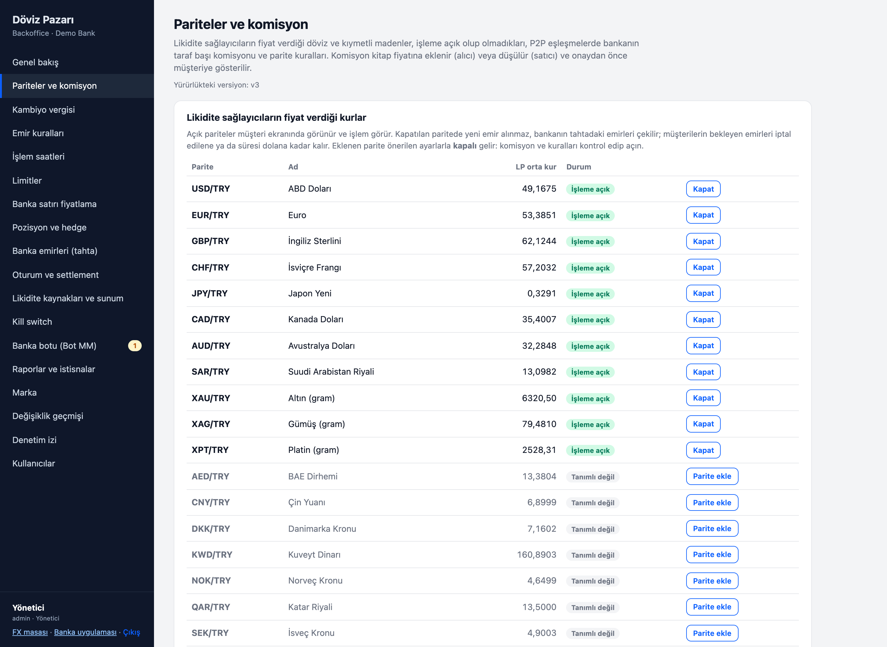
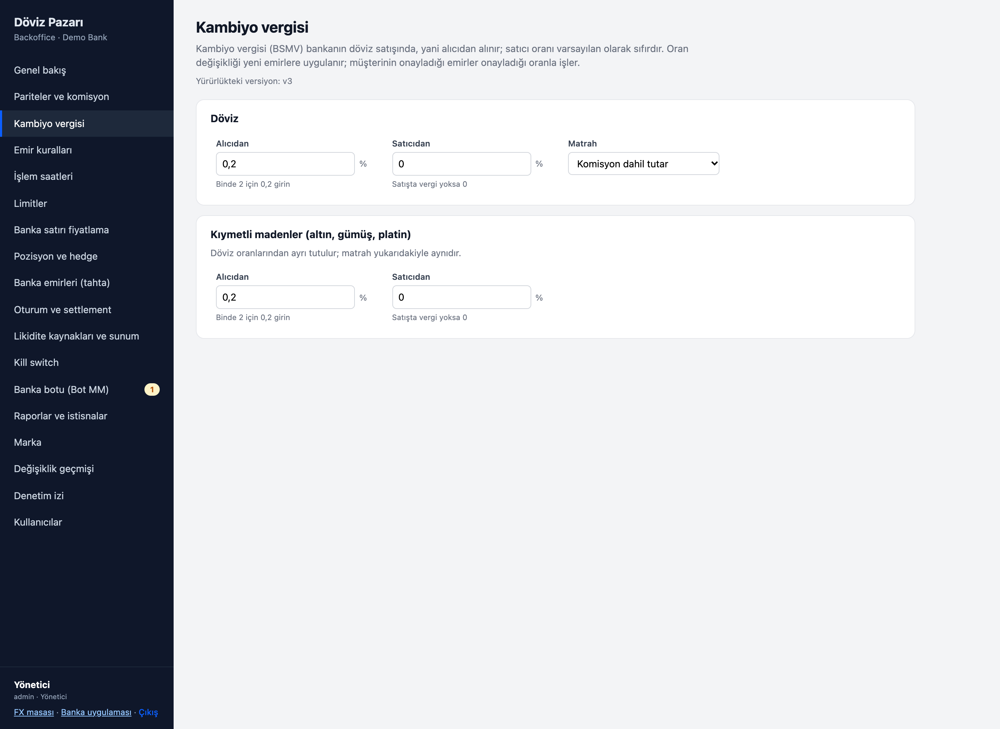
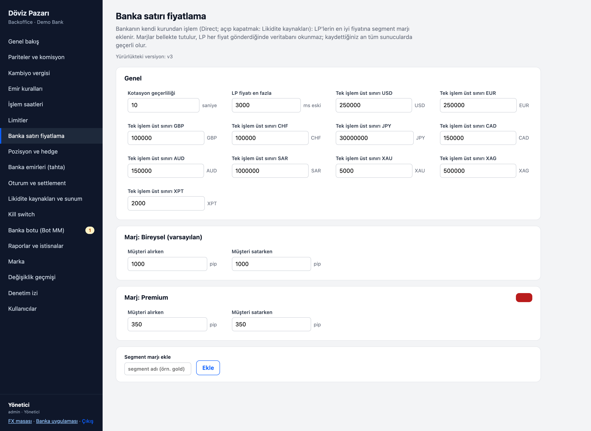
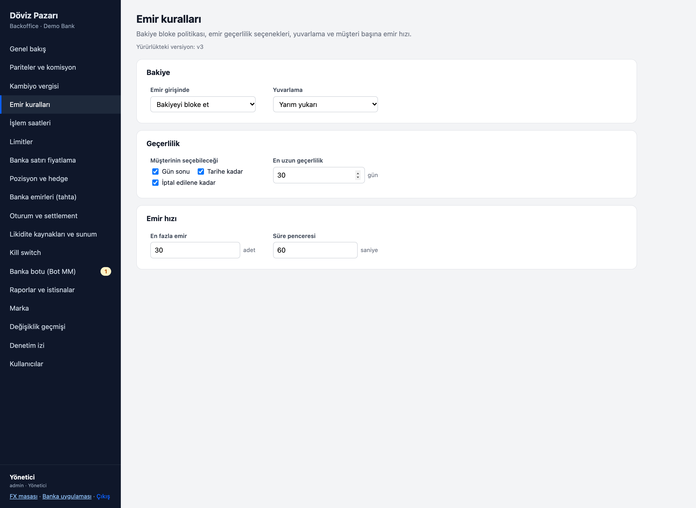
Denetlenebilir değişiklik akışı
- Editör değeri değiştirir; değişen alanlar işaretlenir.
- "Değişiklikleri gözden geçir": sistem yapılandırmayı doğrular ve önce/sonra farkını gösterir.
- Gerekçe zorunludur. Kaydedilen değişiklik yeni bir versiyon olur; kim, ne zaman, neden ve neyi değiştirdi silinemez denetim izine yazılır.
- Herhangi bir eski versiyona tek tıkla dönülebilir; dönüş de yeni bir versiyondur.
Müşterinin onayladığı emir, onayladığı komisyon ve vergiyle işler: her emir hangi yapılandırma versiyonuyla girildiğini saklar.
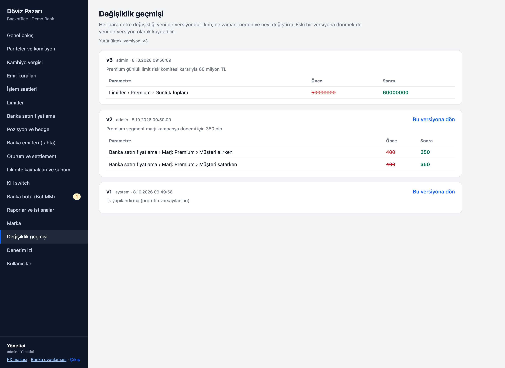
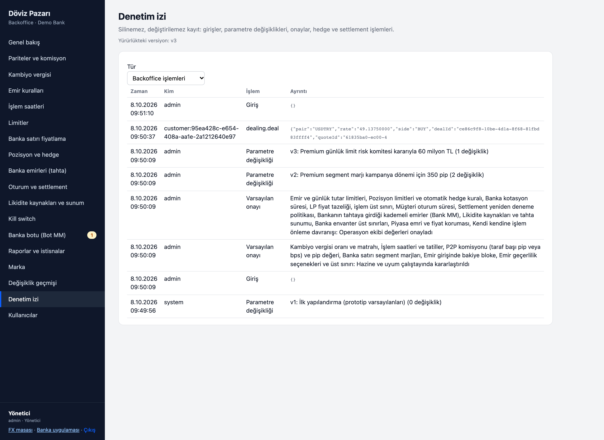
Roller
| Rol | Yetki |
|---|---|
| İzleyici | Her şeyi görür, değiştiremez |
| Editör | Parametre değiştirir, onaylar, settlement tekrar dener, manuel hedge yapar |
| Yönetici | Editör yetkilerine ek olarak kullanıcı ekler, rol değiştirir, pasifleştirir, şifre sıfırlar |
Canlı ortamda backoffice girişinin yerini bankanın tek oturum açma (SSO) altyapısı alır.
7White-label ve uygulama içinde uygulama
p2pFX, bankanın mobil uygulamasında bir WebView içinde açılan web uygulamasıdır. Banka uygulaması hangi teknolojiyle yazılmış olursa olsun (iOS, Android, React Native) ince bir köprü katmanıyla entegre olur.
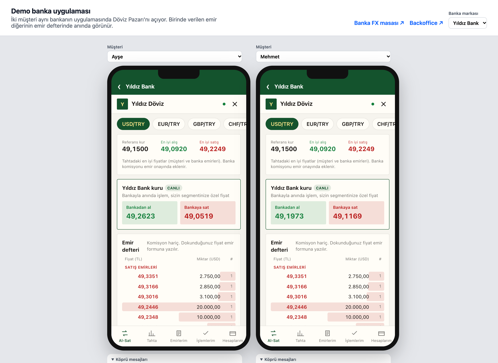
Markalama
Banka ve ürün adı, logo, renkler, köşe yuvarlaklığı, yazı tipi, dil (varsayılan Türkçe) ve tüm ekran metinleri banka ayarıyla değiştirilebilir. Tema ayarları CSS değişkenlerine dönüşür; aynı derleme her bankanın uygulamasında yerli görünür.
Köprü protokolü
Banka uygulaması ile gömülü uygulama arasında tanımlı mesajlar vardır: init, refreshToken (banka → p2pFX); ready, close, tokenExpired, openBankScreen, analyticsEvent (p2pFX → banka). Örneğin döviz hesabı olmayan müşteri tek dokunuşla bankanın hesap açma ekranına yönlendirilir.
Giriş ve erişim güvenliği
- Müşteri bankanın uygulamasında zaten oturum açmıştır; p2pFX için ayrı şifre yoktur.
- Banka backend'i bu müşteri için kendi anahtarıyla imzalı (RS256), en fazla 60 saniye geçerli, tek kullanımlık bir açılış token'ı üretir. Token müşteri referansını, segmentini ve dilini taşır.
- Banka uygulaması token'ı köprü üzerinden verir; p2pFX imzayı doğrular ve 30 dakikalık bir oturuma çevirir. Oturum yalnızca bellekte tutulur.
- Uygulama tarayıcıda bir linkten açılırsa ("yalnızca bankanızın mobil uygulaması içinden açılabilir" der) ya da izin verilmeyen bir sayfa tarafından çerçevelenirse çalışmaz; sunucu
frame-ancestorspolitikasıyla tarayıcının da reddetmesini sağlar. Banka imzalı token olmadan API hiçbir isteğe cevap vermez.
Müşteri kimliği ve KYC bankada kalır. p2pFX'e yalnızca müşteri referansı ve segment gelir.
8Güvenlik, uyum ve entegrasyon
Kurulum modeli
Tek kiracılı mimari: her banka kendi kurulumunu ve kendi veritabanını alır. Kurulum bankanın kendi veri merkezinde veya özel bulutunda, bankanın mevcut WAF, yük dengeleyici ve ağ katmanının arkasında çalışır.
Güvenlik ve uyum özellikleri
- Her eşleşme, dekontlarıyla birlikte bankanın iki döviz işlemi olarak kaydedilir; raporlama bankanın mevcut döviz süreçlerinden akar.
- Emir girişinde ve her hesap kaydında tekrarlanabilirlik anahtarı: ağ hatası aynı işlemi iki kez yaptırmaz.
- Belirsiz sonuçların güvenli yönetimi: temel bankacılık veya LP zaman aşımında işlem sorgulanır, sonuç netleşene kadar "inceleniyor" durumunda kalır.
- Silinemez denetim izi ve versiyonlu yapılandırma; her gerçekleşme kullanılan yapılandırma versiyonunu saklar.
- Emir hızı sınırı, kendisiyle eşleşme önleme, fiyat bandı, segment limitleri.
- Para hesaplarında kayan nokta kullanılmaz: tutarlar kuruş, kurlar 8 haneli sabit noktalı tamsayı olarak tutulur.
- Backoffice şifreleri scrypt ile saklanır; backoffice oturumu müşteri oturumundan ayrı anahtarla imzalanır; pasifleştirilen kullanıcının oturumu hemen düşer.
Bankanın entegre edeceği noktalar
| Arayüz | İşlevler |
|---|---|
| Temel bankacılık adaptörü | Müşteri hesap ve bakiyeleri; bloke koyma, değiştirme, kaldırma; döviz alış/satış kaydı ve dekont; referans kur; işlem sorgulama (belirsiz sonuç için); isteğe bağlı bildirim |
| Açılış token'ı | Banka backend'inin oturum açmış müşteri için imzalı token üretmesi (müşteri referansı, segment, dil) |
| Mobil uygulama köprüsü | iOS, Android veya React Native'de WebView açılışı ve köprü mesajları |
| Likidite sağlayıcıları | Bankanın LP'leri veya mevcut fiyat modülü, aynı adaptör arkasında (banka kuru ve hedge için) |
| Backoffice kimlik doğrulama | Bankanın SSO'su |
| Raporlama | Operasyon API'leri; banka isterse kendi veri ambarına aktarım |
Teknoloji
Uçtan uca TypeScript: sunucu Node.js ve Fastify, veritabanı PostgreSQL, müşteri arayüzü React. Eşleştirme motoru her parite için tek iş parçacıklı ve deterministiktir; denetlenmesi kolaydır ve bir bankanın bireysel müşteri hacmi için yeterlidir. Okuma ve canlı yayın için ek sunucular eklenebilir; veritabanı başına tek eşleştirme örneği çalışır. Sağlık uçları veritabanı, olay akışı, eşleştirme, LP fiyat tazeliği ve operasyon kuyruğunun durumunu raporlar.
9Pilot yol haritası
Önerilen yol: önce bankanın kendi ortamında demo, ardından çalışan entegrasyonlarla kapalı bir müşteri grubu, sonra kademeli açılış. Süreler bankanın entegrasyon hazırlığına göre birlikte belirlenir.
Demo ve parametre çalıştayı
- Demo ortamının banka ekiplerine (dijital, hazine, operasyon, uyum, BT güvenliği) gösterilmesi.
- Komisyon, kambiyo vergisi uygulaması, bloke politikası, işlem saatleri, segmentler ve limitler için banka kararları.
- Pilot paritelerinin seçimi (öneri: USD/TRY, EUR/TRY ve gram altın).
Bankanın test ortamında kurulum
- Temel bankacılık adaptörünün bankanın servislerine bağlanması; bloke, döviz kaydı ve dekont akışlarının test edilmesi.
- Açılış token'ı ve mobil uygulama köprüsü; marka ayarları.
- Backoffice için SSO; banka kuru açılacaksa LP veya fiyat modülü bağlantısı.
- Güvenlik testleri ve uyum incelemesi.
Personel ve davetli müşteriler
- Canlı ortamda, düşük limitlerle, seçili segmentte sınırlı bir müşteri grubu.
- Operasyon kuyruğu, mutabakat ve dekontların günlük takibi.
- İzlenecek göstergeler: eşleşme oranı, emirlerin gerçekleşme süresi, komisyon geliri, banka kuru ile P2P kullanım oranı, operasyon kuyruğuna düşen işlem sayısı, müşteri geri bildirimi.
Kademeli açılış
- Segmentlerin ve paritelerin kademeli açılması; limitlerin pilot verisine göre ayarlanması.
- Bankanın kendi kuru ve tahtadaki banka emirlerinin açılması; pozisyon limitleri ve otomatik hedge.
- İhtiyaca göre: fiyat alarmı, bankanın veri ambarına raporlama, ek pariteler.
10Netleştirilecek konular
Platform tüm oran ve kuralları ayar olarak tutar. Aşağıdaki konular her bankanın uyum, vergi ve hazine ekipleriyle netleştirilir.
| Konu | Prototipteki varsayım |
|---|---|
| Kambiyo vergisi oranı, satıcı tarafının vergilendirilmesi ve matrah | Alıcıdan binde 2, satıcıdan alınmaz; komisyon dahil tutar üzerinden |
| Komisyon seviyesi | Taraf başına 500 pip (USD başına 0,05 TL) |
| Bakiye blokesi | Emir girişinde bloke |
| İşlem saatleri ve tatiller | 7/24 |
| Segment marjları (banka kuru) | Bireysel 1000 pip, premium 400 pip |
| Dekont formatı ve raporlama | Temel bankacılığın döviz alış/satış dekontu |
| Canlı LP bağlantıları ve pozisyonun hazine sistemiyle mutabakatı | Simüle edilmiş üç LP; pozisyon platform veritabanından hesaplanır |
| Native SDK'lar | Köprü protokolü tanımlı; demo uygulama köprüyü simüle eder, native SDK'lar iskelet halindedir |
Demo: Ürün tek komutla ayağa kalkar. İki müşteriyle canlı eşleşme, bankanın kendi kuru, FX masası ve backoffice yaklaşık on dakikalık bir sunumda gösterilir; senaryolu demo bloke kapalı modu ve temel bankacılık hatası durumunu da canlı gösterir.
Bu dokümandaki ekran görüntüleri 8 Ekim 2026'da p2pFX prototipinin demo ortamından alınmıştır. Kurlar, tutarlar ve pozisyonlar demo verisidir. "Demo Bank" ve "Yıldız Bank" örnek markalardır.